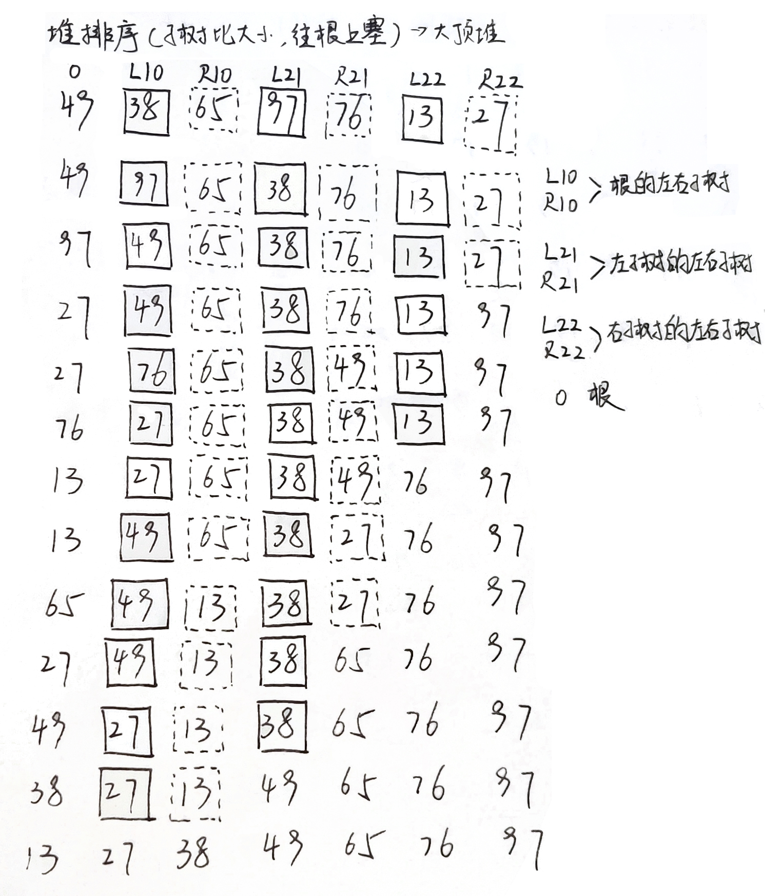

数据结构公式大全
二叉树
- 二叉树的第$k$层最多有$2^{k-1}(k \ge 1)$个结点，针对的是某一层
- 高度（或深度）为$k$的二叉树最多有$2^k-1(k\ge 1)$个结点，针对的是整棵树
- 在任意一棵二叉树中，若叶子结点的个数为$n_0$，度为2的结点数为$n_2$，则$n_0 = n_2 + 1$
- 给定n个结点，能构成$\frac{C^n_{2n}}{n+1}$种不同的二叉树
- 包含n个结点的完全二叉树的高度为$[log_2(n + 1)]$。（注：[ ]表示向下取整）
- 给定完全二叉树的叶子结点数为n，则总结点数为$2n$
- 有n个结点的完全二叉树，对各个结点从上到下、从左到右一次编号（范围为1-n），若i为某结点a的编号，则：
- 如果$i \neq 1$，则a双亲结点的编号为$i{\div}2$
- 如果$2i \le n$，则a左孩子的编号为$2i$；若果$2i+1 > n$，则a无右孩子
- 如果$2i + 1 \le n$，则a右孩子的编号为$2i+1$；如果$2i+1 > n$，则a无右孩子
- 由n个权值构成的哈夫曼树共有$2n-1$个结点
栈
- 给定n个元素，以某种顺序进栈，并且可在任意时刻出栈，则出栈序列有$\frac{C^n_{2n}}{n+1}$种
- 一个循环队列$Q[maxSize]$的队头指针为front，队尾指针为rear。除此之外，该队列再没有其他数据成员，该队列的队满条件为$Q.front == (Q.rear+1)\%maxSize$
- 一个循环队列$Q[maxSize]$的队头指针为front，队尾指针为rear。该队列的队列元素个数为$(Q.rear-Q.front+maxSize)\%maxSize$
图
- 有向图中有n个顶点，则最多有$n(n-1)$条边，具有$n(n-1)$条边的有向图称为有向完全图
- 无向图中有n个顶点，则最多有$n(n-1)/2$条边，具有$n(n-1)/2$条边的无向图称为无向完全图
- 在有n个顶点的有向图中，每个顶点的度最大为$2(n-1)$
- 顶点数为n的连通图，最少有$n-1$条边
- 对$n$阶对称矩阵压缩存储时，需要表长为$n(n+1)/2$
ASL
查找过程中对关键字的平均比较次数（也称为平均查找长度）作为衡量一个查找算法效率优劣的标准。平均查找长度用ASL来表示。
折半判定树
图e中折半查找判定树的查找成功（ASL1）和不成功（ASL2）的平均查找长度为：
$ASL_{成功}$ = (每层的结点个*层数后相加)/总结点数 = (1*1+2*2+4*3+3*4)/10
$ASL_{失败}$ = (空结点*层数-1后相加)/总空结点数 = (5*3+6*4)/11
线性查找法和拉链法

排序算法手排演示
插入类排序
直接插入排序和希尔排序
交换类排序
冒泡排序
过于简单，不写
快速排序
选择类排序
简单选择排序
堆排序

归并排序
本博客所有文章除特别声明外，均采用 CC BY-SA 4.0 协议 ，转载请注明出处！